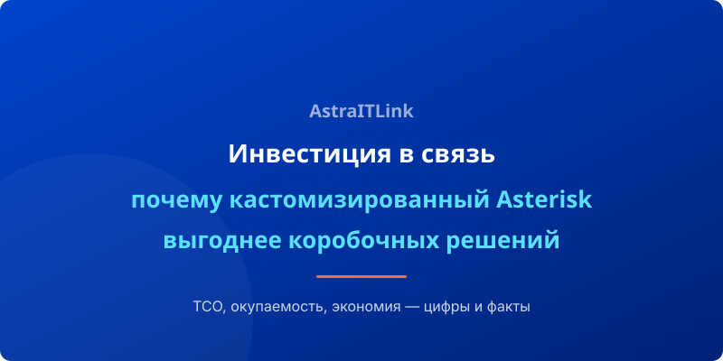

Когда речь заходит о выборе корпоративной телефонии, финансовая составляющая — один из главных аргументов. В этой статье сравниваем совокупную стоимость владения (TCO) кастомизированного Asterisk и проприетарных АТС и разбираем, за счёт чего открытое решение выигрывает в долгосрочной перспективе.
Сравнение TCO: 3 года эксплуатации
Рассмотрим компанию на 100 сотрудников с одним центральным офисом и тремя удалёнными филиалами.
Типовая проприетарная АТС (лицензионная):
- Лицензии на 100 пользователей: 400 000 – 800 000 ₽ (единоразово)
- Ежегодная поддержка (15–20% от стоимости): 80 000 – 160 000 ₽/год
- Оборудование (сервер, VoIP-шлюзы): 150 000 – 300 000 ₽
- Интеграция с CRM: от 50 000 ₽ за модуль (с ежегодным обновлением)
- Итого за 3 года: 1 000 000 – 2 100 000 ₽
Кастомизированный Asterisk:
- Сервер (или VPS): 50 000 – 150 000 ₽
- Настройка и внедрение: 80 000 – 200 000 ₽
- Лицензии: 0 ₽ (открытый код)
- Поддержка (по желанию): от 30 000 ₽/год
- Интеграция с CRM (однократно): 15 000 – 40 000 ₽
- Итого за 3 года: 250 000 – 600 000 ₽
Экономия — от 55% до 75% в пользу Asterisk. При этом функционал не уступает, а по ключевым параметрам (гибкость, интеграция) превосходит проприетарные решения.
Снижение операционных затрат
Помимо очевидной экономии на лицензиях, кастомизированный Asterisk снижает ежемесячные расходы:
- Междугородние звонки: объединение филиалов через IAX2/SIP-транки. Звонки между офисами — бесплатно.
- Мобильные сотрудники: SIP-софтфоны без мобильных тарифов. Звонки через Wi-Fi/интернет.
- Управление: единая биллинговая система, нет скрытых платежей.
Влияние на эффективность бизнеса
Экономия на телефонии — это приятный бонус, но основная ценность кастомизации в другом:
- Интеграция с CRM повышает конверсию отдела продаж на 20–30%
- AI-аналитика звонков сокращает время обработки возражений
- Гибкая маршрутизация снижает процент потерянных звонков до минимума
- Отказоустойчивость исключает простои, которые стоят денег
Окупаемость: реальные цифры
По нашим проектам:
- Компании до 30 сотрудников: окупаемость 2–4 месяца
- Компании 30–100 сотрудников: окупаемость 3–6 месяцев
- Компании от 100 сотрудников: окупаемость 4–7 месяцев
Это в 2–3 раза быстрее, чем у проприетарных АТС, где окупаемость редко наступает раньше 12–18 месяцев.
Вывод
Кастомизированный Asterisk — это не статья расходов, а инвестиция в цифровую независимость компании. Вы не просто получаете АТС — вы приобретаете платформу, которая адаптируется под ваш бизнес, экономит бюджет и даёт конкурентные преимущества. При типовой окупаемости 3–6 месяцев это одно из самых выгодных вложений в IT-инфраструктуру.